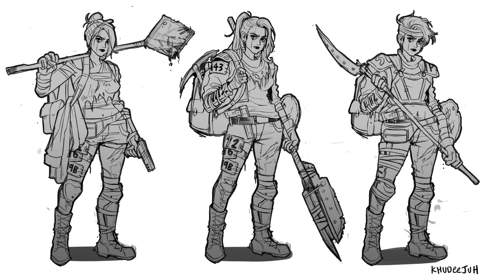
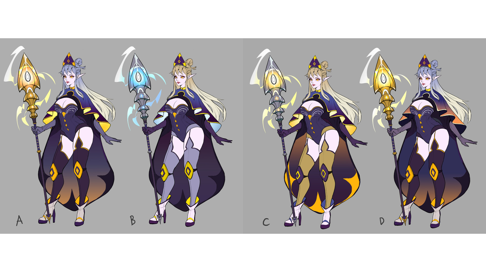
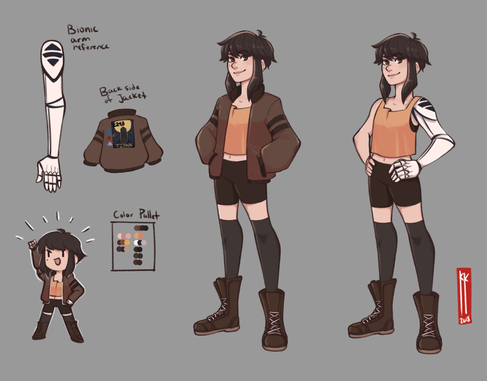

Home
About
Contact
Designing a Character
Materials
Choose a medium or open an art program
Graphite
Charcoal
Paint
Photoshop
Clip Studio Paint
etc...
Directions
Decide what ype of character you want to make and what genre they fit into (adventure, modern, fantasy, sci-fy, etc...).
Find references for design, outfits, and props for your character to draw inspiration from.
Make several thumbnail sketches to get a basic shape and idea of the design.
Choose one sketch to embellish (make sure to think about the silhouette of the sketch).
Embellish sketch with details.
Decide on a color palette for your character.
Make several colored variations of the embellished sketch
Decide on one colored variation and complete drawing with finished linework and color.
Make a reference sheet by drawing other angles of your character and with variations of the outfit such as with a piece of clothing/object removed.
Remember you can always come back and make changes.
  